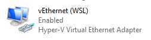

WSL2 and Nikola Blogs
After switching to WSL2 as explained in a previous post, while terminator and code were working fine, something broke with my blogging workflow.
When nikola serve -b is executed from bash, it should launch a web browser and serve the blog locally for review. But this does not work under WSL2 without some adjustments.
X11 forwarding is necessary and can be set up using the VcXsrv application as explained in the previous post.
After VcXsrv is set up, there are a few additions to ~/.bashrc needed.
X11 Forwarding DISPLAY IP Address
WSL2 is a VM that uses a virtual network switch to connect the VM to Windows 10.
To use X11 forwarding with WSL2, the DISPLAY environment variable cannot point to the usual localhost or 127.0.0.1 IP. Instead, DISPLAY must point to the Windows 10 machine's IP address on the virtual network switch. This IP address can be found on the Windows 10 Ethernet adapter that looks the following under Windows:

Unfortunately, this IP seems to change on each boot. But luckily, /etc/resolv.conf has this Windows 10 machine's IP address indicated as the nameserver. We can grab this IP and set it to the DISPLAY variable by adding the following one-liner to ~/.bashrc:
export DISPLAY=$(cat /etc/resolv.conf | grep nameserver | awk '{print $2}'):0.0
Setting A Default Browser
Under WSL2, the BROWSER variable is empty by default. Nikola seems to try multiple browsers when nikola serve -b is invoked, but none of them work since I did not install any browser under WSL2. Adding the following to ~/.bashrc fixes this problem. In this example, I'm setting the default browser to Google Chrome under Windows.
export BROWSER='/mnt/c/Program Files (x86)/Google/Chrome/Application/chrome.exe'
Nikola Must Serve On eth0
By default, Nikola serves on 127.0.0.1. However, this address inside the WSL2 VM is independent of the identical address on the Windows side. The connection between the WSL2 VM and the Windows 10 side is via a virtual network switch. Instead of serving on 127.0.0.1, if we served on the IPv4 address corresponding to the WSL2's eth0 network adapter, then the browser on the Windows side can access the Nikola server through the virtual network switch. Nikola has the -addr= or -a option to specify the IPv4 address to use instead of 127.0.0.1.
To automate this, we add the following line to ~/.bashrc to get the eth0 IPv4 address and save it for use with Nikola:
export MYIPADDR=$(ifconfig eth0 | grep 'inet ' | awk '{print $2}')
With the above changes to ~/.bashrc and sourcing it again, we can invoke Nikola as follows to serve the blog locally on the Windows-side browser:
nikola serve -b -a $MYIPADDR
# nikola auto -b -a $MYIPADDR # alternate option
Sync Between Windows and Nikola
When using nikola auto -b -a $MYIPADDR, Nikola is expected to continuously update the served page as I edit and save. However, WSL2 doesn't seem to notice changes occurring on the Windows side. Need to explore this further another time...
Comments
Comments powered by Disqus